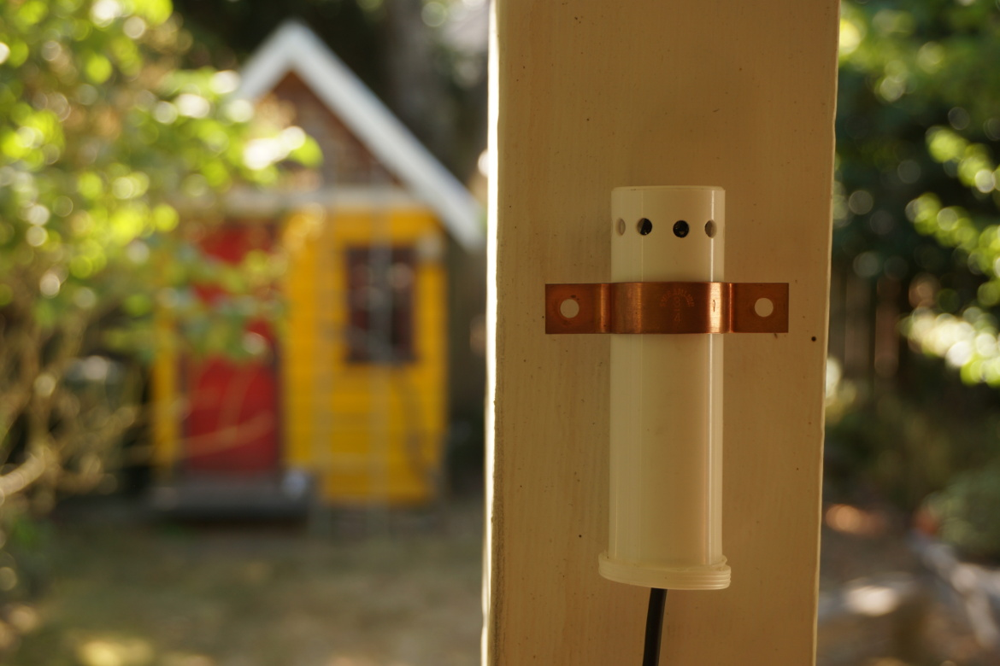
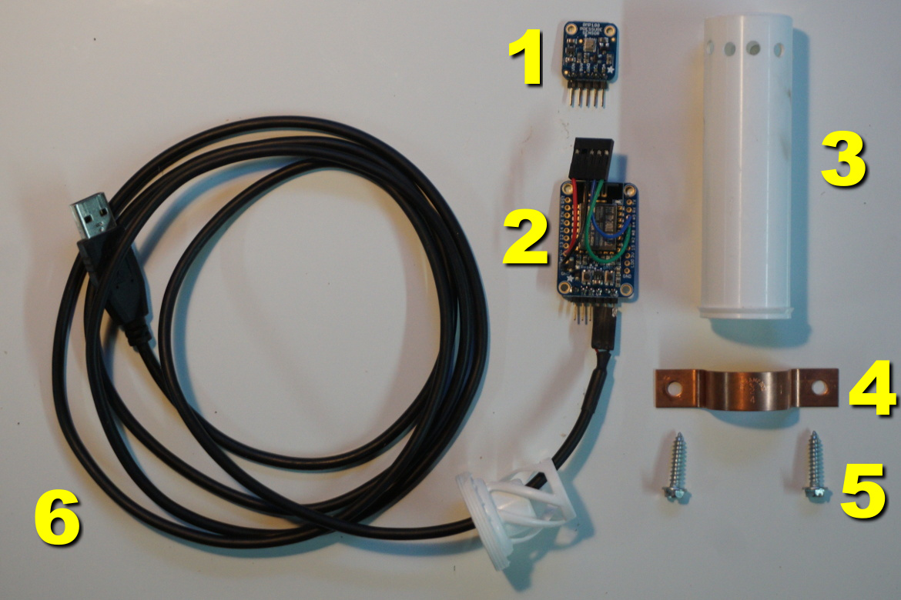
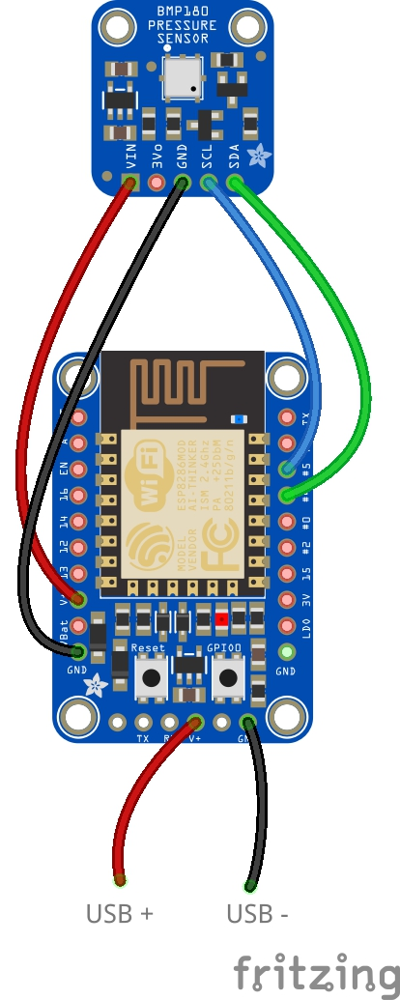
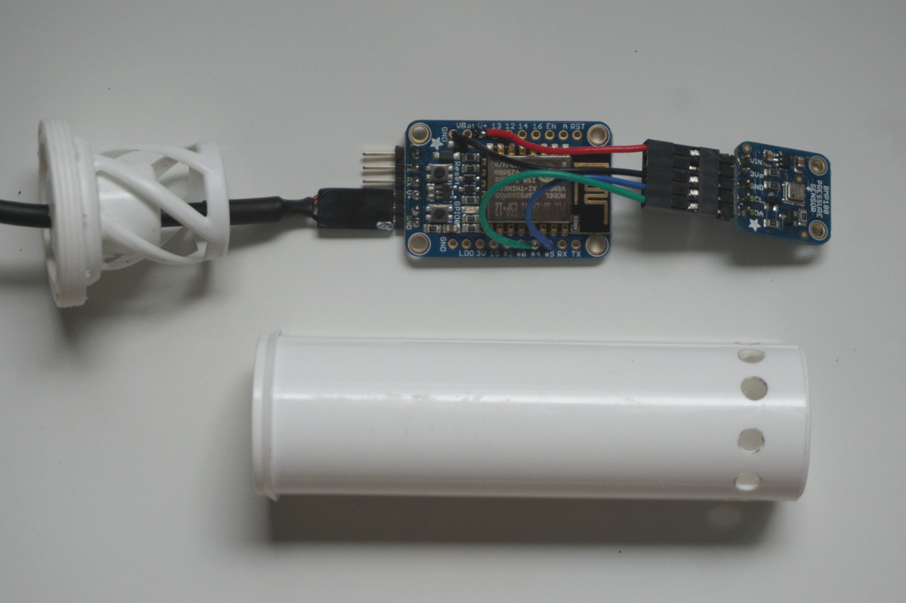
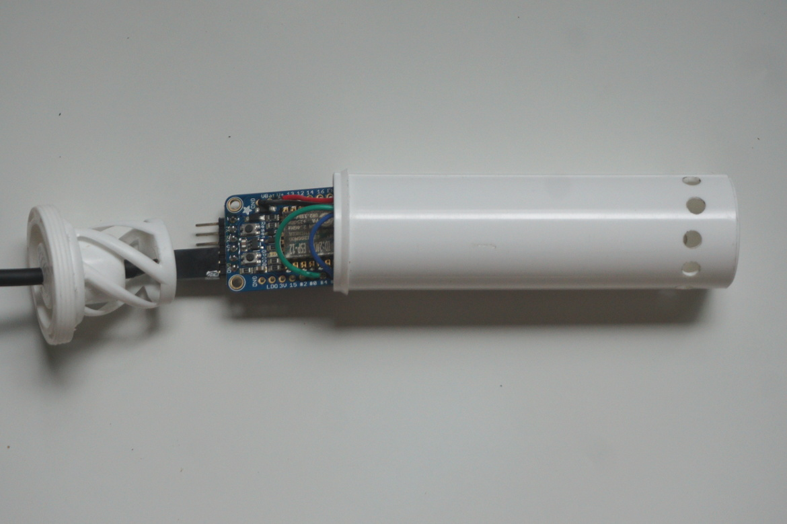

Enclosure mounted outside.
An Adafruit HUZZAH ESP8266
hosting an Adafruit BMP180
pressure/temperature/altitude sensor breakout. Readings are made available
over WiFi via a socket connection.
SOFTWARE
The software is available on
GitHub .
HARDWARE
Here are some details about the hardware used. The overall parts are
shown below.

(1) BMP180 breakout, (2) ESP8266 HUZZAH,
(3) empty nuun tube, (4) 3/4" copper pipe mount, (5) screws,
(6) old USB cable for power.
The wiring is shown in the Fritzing diagram below.

Wiring diagram.
The BMP180 breakout is attached to the ESP8266 HUZZAH.

BMP180 attached.
Everthing fits inside the empty nuun tube.

Putting it together.
Find a good place to mount it outside.
Enclosure mounted outside.